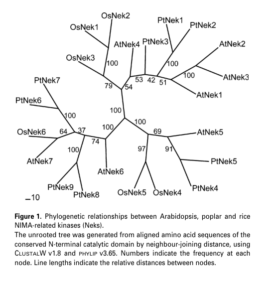

NEK3 (NimA-related protein kinase 3, AT5G28290) is a serine/threonine protein kinase belonging to the plant NIMA-related kinase (NEK) family, one of seven members in Arabidopsis. The N-terminal half (residues 4-258) contains a canonical protein kinase domain with ATP-binding and catalytic sites, while the C-terminal half (residues ~258-568) is a regulatory region with disordered segments. GFP-tagged NEK3 localizes to microtubules in a similar manner to NEK6, the best-characterized plant NEK (PMID:21605211). The Arabidopsis NEK family broadly regulates microtubule organization, with NEK6 shown to phosphorylate beta-tubulin and destabilize cortical microtubules to control directional cell expansion. However, NEK3 itself is poorly characterized: no nek3 mutant phenotype, no specific substrates, and no specific interaction partners have been published. UniProt annotates NEK3 function as "May be involved in plant development processes" based on family-wide expression analysis (PMID:17886359).
| GO Term | Evidence | Action | Reason |
|---|---|---|---|
|
GO:0004674
protein serine/threonine kinase activity
|
IBA
GO_REF:0000033 |
ACCEPT |
Summary: Protein serine/threonine kinase activity is inferred by phylogenetic analysis (IBA) from characterized NEK family members. NEK3 contains a canonical protein kinase domain (IPR000719, residues 4-258) with conserved ATP-binding and Ser/Thr kinase active site motifs. The related NEK6 has demonstrated kinase activity in vitro, phosphorylating beta-tubulin. This annotation is well-supported by domain architecture and family membership.
Reason: Ser/Thr kinase activity is the core molecular function of the NEK family. The domain architecture (kinase domain, ATP-binding site, catalytic residues) strongly supports this annotation. The closely related NEK6 has demonstrated kinase activity experimentally.
Supporting Evidence:
PMID:21605211
NEK6 directly binds to microtubules in vitro and phosphorylates β-tubulin
PMID:17886359
NIMA-related kinases (Neks) are a family of serine/threonine kinases
file:ARATH/NEK3/NEK3-deep-research-bioreason-sft.md
[BioReason correctly identifies canonical bilobal catalytic module with ATP-binding P-loop and serine/threonine kinase active site]
file:ARATH/NEK3/NEK3-deep-research-falcon.md
Plant NEKs (including AtNek3) are described as **serine/threonine protein kinases** with a conserved **N-terminal catalytic kinase domain** and a longer **C-terminal non-catalytic extension**, consistent with the UniProt domain calls (protein kinase domain; ATP-binding and activation-segment motifs).
file:ARATH/NEK3/NEK3-deep-research-falcon.md
AtNek3 is a **NIMA-related serine/threonine protein kinase** by sequence/domain architecture and family definition; reaction class is ATP-dependent phosphorylation of protein substrates (EC 2.7.11.1), but **substrate identity and specificity remain unknown** for AtNek3 based on retrieved evidence.
|
|
GO:0004672
protein kinase activity
|
IEA
GO_REF:0000002 |
MODIFY |
Summary: Protein kinase activity is inferred from InterPro domain matches (IPR000719 protein kinase domain, IPR008271 Ser/Thr kinase active site). This is a more general parent term of protein serine/threonine kinase activity (GO:0004674). Since the more specific Ser/Thr kinase annotation is already present via IBA, this general term is redundant.
Reason: The more specific term GO:0004674 (protein serine/threonine kinase activity) is already annotated and better represents the function. NEK kinases are Ser/Thr-specific kinases, so the general protein kinase activity term should be replaced with the specific one.
Proposed replacements:
protein serine/threonine kinase activity
|
|
GO:0004674
protein serine/threonine kinase activity
|
IEA
GO_REF:0000003 |
ACCEPT |
Summary: This is a duplicate annotation from EC number mapping (EC:2.7.11.1). The same term is already annotated via IBA (GO_REF:0000033) with stronger evidence. This EC-based IEA annotation is redundant but not incorrect.
Reason: The annotation is correct based on the EC number assignment. Although redundant with the IBA annotation, it provides independent supporting evidence from a different source (enzyme classification).
|
|
GO:0005524
ATP binding
|
IEA
GO_REF:0000002 |
ACCEPT |
Summary: ATP binding is inferred from InterPro domain matches (IPR000719 protein kinase domain, IPR017441 ATP binding site). The protein kinase domain contains a conserved glycine-rich P-loop (residues 10-18) and a conserved lysine (K33) for ATP coordination. ATP binding is required for kinase catalytic activity.
Reason: ATP binding is a fundamental requirement for kinase activity. The domain architecture clearly supports this annotation, with conserved ATP-binding motifs identified by PROSITE and InterPro.
Supporting Evidence:
file:ARATH/NEK3/NEK3-deep-research-falcon.md
Plant NEKs (including AtNek3) are described as **serine/threonine protein kinases** with a conserved **N-terminal catalytic kinase domain** and a longer **C-terminal non-catalytic extension**, consistent with the UniProt domain calls (protein kinase domain; ATP-binding and activation-segment motifs).
|
|
GO:0106310
protein serine kinase activity
|
IEA
GO_REF:0000116 |
MODIFY |
Summary: Protein serine kinase activity is inferred from the Rhea reaction mapping (RHEA:17989) for the catalytic activity L-seryl-[protein] + ATP = O-phospho-L-seryl-[protein] + ADP + H+. This is a more specific child term of GO:0004674 that restricts the substrate to serine residues only. NEK kinases are dual serine/threonine kinases, so the more general GO:0004674 is more appropriate.
Reason: NEK kinases phosphorylate both serine and threonine residues (UniProt lists both catalytic activities). The serine-only term is overly restrictive. The broader serine/threonine kinase activity term better captures the function.
Proposed replacements:
protein serine/threonine kinase activity
|
|
GO:0005634
nucleus
|
ISM
GO_REF:0000122 |
REMOVE |
Summary: Nuclear localization is predicted by TAIR computational methods (AtSubP analysis). However, GFP-tagged NEK3 localizes to microtubules (PMID:21605211), not the nucleus. The related NEK6 localizes to cortical microtubules. There is no experimental evidence supporting nuclear localization for any Arabidopsis NEK family member.
Reason: The ISM prediction of nuclear localization contradicts the only direct experimental evidence: GFP-NEK3 localizes to microtubules (Motose et al. 2011). NEK family members in plants are cytoplasmic and microtubule-associated. The computational prediction is likely incorrect.
Supporting Evidence:
file:ARATH/NEK3/NEK3-deep-research-falcon.md
No AtNek3-specific experimental subcellular localization was identified in the gathered evidence. Localization data in the available literature concern other plant NEKs such as PNek1, not AtNek3.
|
|
GO:0005886
plasma membrane
|
ISM
GO_REF:0000122 |
REMOVE |
Summary: Plasma membrane localization is predicted by TAIR computational methods (AtSubP analysis). NEK3 has no transmembrane domains and no lipid modification signals. GFP-tagged NEK3 localizes to microtubules (PMID:21605211). While cortical microtubules are near the plasma membrane, the protein itself is a soluble kinase associated with microtubules, not the plasma membrane.
Reason: The ISM prediction of plasma membrane localization is not supported by experimental evidence. GFP-NEK3 localizes to microtubules (Motose et al. 2011). The protein lacks transmembrane domains or membrane-targeting signals. Cortical microtubule proximity to the plasma membrane may confound computational predictions, but the protein is microtubule-associated, not membrane-associated.
Supporting Evidence:
file:ARATH/NEK3/NEK3-deep-research-falcon.md
No AtNek3-specific experimental subcellular localization was identified in the gathered evidence. Localization data in the available literature concern other plant NEKs such as PNek1, not AtNek3.
|
|
GO:0005874
microtubule
|
IDA
PMID:21605211 NIMA-related kinases 6, 4, and 5 interact with each other to... |
NEW |
Summary: GFP-tagged NEK3 localizes to microtubules in Arabidopsis cells, in a similar manner to the well-characterized NEK6. This is direct experimental evidence from fluorescence microscopy. The related NEK6 directly binds microtubules in vitro. Note: independent falcon deep research did not retrieve this NEK3-specific localization result in its corpus (it noted localization data for other plant NEKs such as PNek1), reflecting a coverage limitation rather than a contradiction; the IDA from Motose et al. 2011 remains the strongest direct evidence and is retained.
Reason: This annotation is supported by direct experimental observation of GFP-NEK3 localization to microtubules (Motose et al. 2011). This is the most informative cellular component annotation for NEK3 and should be added. Evidence type is IDA based on fluorescence microscopy of GFP fusion protein.
Supporting Evidence:
PMID:21605211
Here, we analyze the function of NEK6 and other members of the NEK family with regard to epidermal cell expansion and cortical microtubule organization
|
Q: What is the phenotype of nek3 single mutants and nek3/nek6 double mutants? Do they show microtubule organization defects similar to nek6/ibo1?
Suggested experts: Hiroyasu Motose, Taku Takahashi
Q: Does NEK3 phosphorylate beta-tubulin like NEK6, or does it have distinct substrates? Can NEK3 form heterodimers with NEK4, NEK5, or NEK6?
Suggested experts: Hiroyasu Motose, Shogo Takatani
Q: Is NEK3 expressed in pollen or pollen tubes? Is there functional redundancy among NEK family members in specific tissues?
Suggested experts: Frederic Vigneault
Experiment: Generate nek3 T-DNA insertion mutants and analyze cortical microtubule organization using fluorescent tubulin markers. Compare single nek3 mutants with nek3/nek6, nek3/nek4, and nek3/nek5 double mutants for cell expansion defects, trichome morphology, and sensitivity to microtubule inhibitors (propyzamide, taxol).
Hypothesis: NEK3 has overlapping function with other NEK family members in regulating cortical microtubule organization
Type: reverse genetics
Experiment: Express and purify recombinant NEK3 kinase domain. Test in vitro kinase activity using beta-tubulin and known microtubule-associated proteins as substrates. Compare substrate specificity with NEK6.
Hypothesis: NEK3 phosphorylates beta-tubulin or other microtubule-associated proteins
Type: in vitro biochemistry
Experiment: Perform bimolecular fluorescence complementation (BiFC) or co-immunoprecipitation experiments to test pairwise interactions between NEK3 and NEK4, NEK5, NEK6, and NEK7. Compare interaction patterns with the known NEK6-NEK4 and NEK6-NEK5 interactions.
Hypothesis: NEK3 forms heterodimeric complexes with other NEK family members
Type: protein-protein interaction
I begin with the InterPro architecture. The polypeptide is assigned to IPR050660 (NEK Serine/Threonine Protein Kinase family, residues 1–518), which frames the entire sequence as a NIMA-related kinase with a conserved catalytic core and extended regulatory tail. Within this family envelope, the N-terminal half contains IPR011009 (Protein kinase-like domain superfamily, residues 1–301), and, more specifically, a canonical bilobal catalytic module defined by IPR000719 (Protein kinase domain, residues 4–257) and IPR000719 (Protein kinase domain, residues 4–258). The ATP-binding P-loop and adjacent glycine-rich segment are captured by IPR017441 (Protein kinase, ATP binding site, residues 10–33), while the catalytic HRD/DFG-centered machinery is pinpointed by IPR008271 (Serine/threonine-protein kinase, active site, residues 125–137). The ordered layout—ATP-binding segment leading into the catalytic loop within a NEK-family scaffold—causes ATP-dependent transfer of phosphate to serine/threonine residues on protein substrates. The NEK family context further implies regulation by activation-loop phosphorylation and docking interactions mediated by the C-terminal regulatory region (beyond residue ~257 up to 518), which typically confers subcellular targeting and substrate selection.
From this domain logic, the molecular function resolves to protein serine/threonine kinase activity (GO:0004674) driven by ATP binding (GO:0005524). The presence of broad interaction surfaces in NEK regulatory tails and the need to dock substrates and adaptors supports protein binding (GO:0005515). Together, these features define an enzyme that phosphorylates protein targets in a context-dependent manner.
NEK kinases are well known to control microtubule behavior. In plants, the cortical microtubule array dictates cell wall deposition patterns and anisotropic growth. A NEK with a long regulatory tail is well-suited to couple kinase activity to microtubule-associated proteins, thereby promoting microtubule bundle formation (GO:0001578). Phosphorylation of bundling factors, severing enzymes, or crosslinkers would stabilize parallel arrays and increase bundle longevity, which in turn drives directional expansion of specialized cells. In the male gametophyte, this control over cortical array stability and orientation provides the mechanical basis for polarized elongation, aligning with pollen development (GO:0009555). Thus, the catalytic architecture explains how the protein enforces microtubule bundle integrity and supports tip growth in pollen.
The cellular component follows from the same chain. A soluble kinase lacking transmembrane segments but equipped for cytoskeletal targeting will partition to the cytoplasm and associate with the microtubule cytoskeleton. The explicit functional tie to cortical microtubules places the protein at the cortical microtubule track (GO:0055028), embedded within the broader cytoskeleton (GO:0005856) and cytoplasm (GO:0005737). This localization allows direct access to substrates that shape the cortical array and to trafficking machinery that delivers wall materials.
A mechanistic hypothesis emerges: the kinase docks onto cortical microtubules via its NEK-family regulatory region, where it phosphorylates microtubule-associated proteins to promote bundle formation and persistence. SNAP29, a membrane trafficking factor at the plasma membrane–endomembrane interface, could act as a scaffold that positions the kinase near exocytic hotspots where cortical microtubules guide vesicle delivery. The T-complex protein 1 subunit epsilon (a CCT chaperonin component) likely assists in folding and assembly of the kinase and/or its microtubule-binding partners, ensuring a competent cortical complex. Beta-glucosidase 20, involved in cell wall carbohydrate remodeling, may be indirectly regulated through phosphorylation of trafficking or exocytosis components that control its delivery to growth sites. In aggregate, the kinase forms a cortical module that stabilizes microtubule bundles to steer vesicle traffic and cell wall deposition during pollen tube elongation.
## Functional Summary
A cytoplasmic, cortical-cytoskeleton–associated serine/threonine kinase that promotes microtubule bundle formation to support polarized growth during pollen development. Its N-terminal catalytic core binds ATP and phosphorylates protein substrates, while a NEK-family regulatory region targets the enzyme to cortical microtubules and provides docking interfaces for partners. By stabilizing microtubule bundles, it organizes vesicle delivery and cell wall deposition patterns required for elongating pollen tubes, likely operating in concert with membrane trafficking and protein-folding factors at the cell cortex.
## UniProt Summary
Involved in the regulation of cortical microtubule bundle integrity. Required for pollen tube elongation.
## InterPro Domains
- IPR011009: Protein kinase-like domain superfamily (homologous_superfamily) [1-301]
- IPR050660: NEK Serine/Threonine Protein Kinase (family) [1-518]
- IPR000719: Protein kinase domain (domain) [4-257]
- IPR000719: Protein kinase domain (domain) [4-258]
- IPR017441: Protein kinase, ATP binding site (binding_site) [10-33]
- IPR008271: Serine/threonine-protein kinase, active site (active_site) [125-137]
## GO Term Predictions
### Molecular Function
### Biological Process
### Cellular Component
The research report should be a detailed narrative explaining the function, biological processes, and localization of the gene product. Citations should be given for all claims.
You should prioritize authoritative reviews and primary scientific literature when conducting research. You can supplement
this with annotations you find in gene/protein databases, but these can be outdated or inaccurate.
We are specifically interested in the primary function of the gene - for enzymes, what reaction is catalyzed, and what is the substrate specificity? For transporters, what is the substrate? For structural proteins or adapters, what is the broader structural role? For signaling molecules, what is the role in the pathway.
We are interested in where in or outside the cell the gene product carries out its function.
We are also interested in the signaling or biochemical pathways in which the gene functions. We are less interested in broad pleiotropic effects, except where these elucidate the precise role.
Include evidence where possible. We are interested in both experimental evidence as well as inference from structure, evolution, or bioinformatic analysis. Precise studies should be prioritized over high-throughput, where available.
Arabidopsis NEK3 (AtNek3; At5g28290; UniProt Q8RX66) is a plant NIMA-related serine/threonine protein kinase (EC 2.7.11.1) in the NEK family, defined by a conserved N-terminal protein-kinase catalytic domain and a long basic C-terminal extension typical of NIMA-related kinases. In the accessible literature retrieved here, the strongest AtNek3-specific evidence concerns gene identity, domain architecture, phylogenetic placement, and organ/tissue expression patterns; direct experimental evidence for AtNek3 subcellular localization, biochemical substrates, or mutant/overexpression phenotypes was not found. Therefore, mechanistic insights are largely inferred from the broader plant NEK family and are explicitly labeled as such. (vigneault2007membersofthe pages 1-2, vigneault2007membersofthe pages 2-4, vigneault2007membersofthe pages 4-6, vigneault2007membersofthe pages 8-10, vigneault2009caractérisationdela pages 130-134, vigneault2009caractérisationdela pages 70-74)
NIMA-related kinases (Neks/NEKs) are a conserved family of serine/threonine kinases originally linked to mitotic control in fungi and animals, but in plants they have been strongly connected to microtubule-associated regulation of cell expansion and organ morphogenesis (family-level concept). (vigneault2007membersofthe pages 1-2, motose2012nimarelatedkinasesregulate pages 1-3, motose2012nimarelatedkinasesregulate pages 3-4)
For NEK3, functional annotation ideally includes: (i) catalytic activity and substrate specificity; (ii) cellular compartment(s) of action; (iii) pathway context (developmental/stress signaling modules); and (iv) phenotype under perturbation. In the retrieved evidence, AtNek3 is best annotated at (a) molecular class (Ser/Thr kinase) and (b) likely biological-process context (developmental/vascular and meristem-associated expression), while (i), (ii), and (iv) remain gaps for AtNek3 specifically. (vigneault2007membersofthe pages 4-6, vigneault2007membersofthe pages 8-10, vigneault2009caractérisationdela pages 130-134)
The gene symbol NEK3 is ambiguous across organisms. The sources retrieved explicitly map AtNek3 to Arabidopsis thaliana locus At5g28290, consistent with the UniProt target Q8RX66 and the NEK/NIMA-related Ser/Thr kinase family. (vigneault2007membersofthe pages 1-2, vigneault2007membersofthe pages 2-4, vigneault2009caractérisationdela pages 130-134)
Plant NEKs (including AtNek3) are described as serine/threonine protein kinases with a conserved N-terminal catalytic kinase domain and a longer C-terminal non-catalytic extension, consistent with the UniProt domain calls (protein kinase domain; ATP-binding and activation-segment motifs). Sequence excerpts in the plant-NEK thesis include conserved Ser/Thr kinase motifs for AtNek3 (At5g28290), supporting the enzyme-class assignment. (vigneault2007membersofthe pages 1-2, vigneault2009caractérisationdela pages 70-74, vigneault2009caractérisationdela pages 130-134)
AtNek3 clusters with AtNek1–AtNek3 in a plant-specific clade distinct from fungal and mammalian NEKs, supporting the idea that plant NEKs have evolved specialized roles. (vigneault2007membersofthe pages 8-10, vigneault2007membersofthe media 26e7bf46, vigneault2009caractérisationdela pages 70-74)
A key AtNek3-specific result is its organ/tissue expression profile. In Arabidopsis, AtNek3 shows strong expression in root tips and relatively high expression in the shoot apex; expression is preferentially associated with young leaves and vascular elements, and it declines in senescent leaves. These patterns were interpreted by the authors as consistent with roles in organ development/tissue differentiation and vascularization (inference from expression and family context). (vigneault2007membersofthe pages 4-6, vigneault2007membersofthe pages 8-10, vigneault2007membersofthe media 26e7bf46, vigneault2007membersofthe media 77c1eb59)
A dissertation on Arabidopsis NIMA-like kinases reports that AtNIMA3 has an organ-specific transcription profile not associated with the mitotic cell cycle, suggesting AtNek3 transcription is not tightly coupled to mitosis (unlike many fungal/animal NEKs). (agueci2010characterizationofnimalike pages 5-9)
No AtNek3-specific experimental evidence of subcellular localization (e.g., GFP fusions) or direct microtubule association was found in the retrieved evidence set. Consequently, AtNek3 localization cannot be asserted beyond domain-based speculation. (vigneault2007membersofthe pages 4-6, vigneault2009caractérisationdela pages 130-134)
A 2023 preprint in the liverwort Marchantia polymorpha investigated MpNEK1 using estradiol-inducible overexpression. Overexpression caused severe growth suppression (rhizoids and thalli), with dose sensitivity detectable even at 10–100 nM estradiol and MpNEK1 transcript induction of approximately 4–15× in responsive lines. Cell proliferation readouts (EdU labeling and reduced mitotic counts) supported suppressed proliferation, while microtubule arrays were not grossly disrupted. Importantly, kinase-deficient MpNEK1 variants still suppressed growth (milder), suggesting a potentially phosphorylation-independent component to NEK function in plants. These findings update the field’s thinking about how plant NEKs may operate, but they do not directly establish AtNek3 function in Arabidopsis. (mase2023overexpressionofnimarelated pages 5-8, mase2023overexpressionofnimarelated pages 1-5, mase2023overexpressionofnimarelated pages 8-11, mase2023overexpressionofnimarelated pages 11-13)
A 2023 review summarizes how microtubules participate in abiotic stress responses (heat, salinity, drought) through rapid reorganization and regulation by diverse microtubule-associated proteins. This contextualizes why plant NEKs—given their family-level links to microtubule function—remain relevant candidates for stress-adaptation biology, although the retrieved pages did not specifically mention AtNek3. (hsiao2023microtubuleregulationin pages 6-7, hsiao2023microtubuleregulationin pages 7-9, hsiao2023microtubuleregulationin pages 9-10)
Although AtNek3 itself lacks application-grade evidence in the retrieved set, the plant NEK family has been implemented in transgenic contexts:
- Soybean GmNEK1: Overexpression in Arabidopsis increased leaf growth with statistical reporting (n = 24, P < 0.01) and GmNEK1 co-localized with a tubulin marker (GFP–TUB6), supporting a microtubule-linked mechanism; the study also reports stress-responsive induction patterns (e.g., salt/cold) and improved tolerance phenotypes under stress assays. (pan2017soybeannimarelatedkinase1 pages 2-4, pan2017soybeannimarelatedkinase1 pages 8-9, pan2017soybeannimarelatedkinase1 pages 6-8)
- Arabidopsis NEK6: Overexpression and mutant analysis show altered growth and improved tolerance to osmotic/salt stress in controlled assays, indicating potential leverage points for engineering growth robustness. (zhang2011nimarelatedkinasenek6 pages 7-8, zhang2011nimarelatedkinasenek6 pages 1-2)
These examples support “real-world implementation” in the sense of genetic engineering strategies to modify growth and stress tolerance, but they should not be conflated with AtNek3-specific applications. (pan2017soybeannimarelatedkinase1 pages 2-4, zhang2011nimarelatedkinasenek6 pages 7-8)
A peer-reviewed short review on Arabidopsis NEKs argues that plant NEKs regulate directional cell growth and organ development through microtubule function, with emphasis on NEK4/NEK5/NEK6 interactions and a model in which NEK6 destabilizes microtubules (potentially via β-tubulin phosphorylation). This is an authoritative synthesis for the NEK family, but it provides no direct AtNek3 mechanistic claims. (motose2012nimarelatedkinasesregulate pages 1-3, motose2012nimarelatedkinasesregulate pages 3-4, motose2012nimarelatedkinasesregulate pages 4-4)
AtNek3-specific quantitative phenotype or biochemical data were not present in the retrieved evidence. The key quantitative-like outputs for AtNek3 are expression patterns across organs/tissues (qualitatively described and visually presented). (vigneault2007membersofthe pages 4-6, vigneault2007membersofthe media 26e7bf46, vigneault2007membersofthe media 77c1eb59)
| Claim/Aspect | Evidence summary | Source (author/year, journal) | URL/DOI | Notes/limitations |
|---|---|---|---|---|
| Identity | AtNek3 is explicitly identified as the Arabidopsis thaliana NIMA-related kinase family member encoded by locus At5g28290; the family description matches the UniProt target NEK3/Q8RX66. (vigneault2007membersofthe pages 1-2, vigneault2007membersofthe pages 2-4) | Vigneault et al., 2007, The Plant Journal | https://doi.org/10.1111/j.1365-313x.2007.03161.x | Confirms the correct Arabidopsis gene and distinguishes it from non-plant NEK3 proteins. |
| Domain architecture | Plant Neks, including AtNek3, are described as serine/threonine kinases with a conserved N-terminal catalytic kinase domain and a longer C-terminal non-catalytic extension; sequence-level evidence in the thesis shows conserved Ser/Thr kinase motifs in AtNek3. (vigneault2007membersofthe pages 1-2, vigneault2009caractérisationdela pages 130-134, vigneault2009caractérisationdela pages 70-74) | Vigneault et al., 2007, The Plant Journal; Vigneault, 2009, thesis | https://doi.org/10.1111/j.1365-313x.2007.03161.x; thesis DOI: 10.25673/202 | Strong family/domain inference, but no AtNek3-specific biochemical assay was reported in the gathered evidence. |
| Phylogenetic placement | AtNek3 clusters with the AtNek1–AtNek3 subgroup within a plant-specific Nek clade, distinct from fungal and mammalian Neks; plant Neks were inferred to descend from an ancestral plant Nek. (vigneault2007membersofthe pages 8-10, vigneault2009caractérisationdela pages 70-74, vigneault2007membersofthe media 26e7bf46) | Vigneault et al., 2007, The Plant Journal; Vigneault, 2009, thesis | https://doi.org/10.1111/j.1365-313x.2007.03161.x; thesis DOI: 10.25673/202 | Evolutionary evidence supports likely conserved plant-specific function, but does not by itself establish mechanism. |
| Expression pattern in Arabidopsis organs/tissues | AtNek3 transcripts are reported as strong in root tips and relatively high in the shoot apex, with expression preferentially associated with young leaves and vascular elements; AtNek3 expression is very low in hypocotyl, xylem, and cork extracts and decreases strongly in senescent leaves. (vigneault2007membersofthe pages 4-6, vigneault2007membersofthe pages 8-10, vigneault2007membersofthe media 26e7bf46) | Vigneault et al., 2007, The Plant Journal | https://doi.org/10.1111/j.1365-313x.2007.03161.x | Evidence is expression-based and tissue-level; it does not prove subcellular localization or direct function. |
| Cell-cycle association | A dissertation summary states that AtNIMA3/AtNek3 shows an organ-specific transcription profile not associated with the mitotic cell cycle, contrasting with some NEKs in fungi/animals. (agueci2010characterizationofnimalike pages 5-9) | Agueci, 2010, dissertation | https://doi.org/10.25673/202 | Mapping to At5g28290/Q8RX66 is inferential within the gathered evidence; no direct AtNek3 cell-cycle assay was cited here. |
| Inferred biological role | Based on expression in root tips, shoot apex, young leaves, and vascular tissues, the authors infer that AtNek3 is involved more in organ development, tissue differentiation, and vascularization than in core mitotic control. (vigneault2007membersofthe pages 4-6, vigneault2007membersofthe pages 8-10) | Vigneault et al., 2007, The Plant Journal | https://doi.org/10.1111/j.1365-313x.2007.03161.x | This is an inference from comparative expression and phylogeny; no direct AtNek3 mutant or overexpression phenotype was provided. |
| Subcellular localization | No AtNek3-specific experimental subcellular localization was identified in the gathered evidence. Localization data in the available literature concern other plant NEKs such as PNek1, not AtNek3. (vigneault2009caractérisationdela pages 74-79) | Vigneault, 2009, thesis | thesis DOI: 10.25673/202 | Important evidence gap: localization for AtNek3 remains unresolved in the retrieved sources. |
| Enzymatic activity / substrates | Although AtNek3 is classified as a serine/threonine protein kinase by family/domain features, no AtNek3-specific kinase assay, substrate, or substrate specificity was found in the gathered evidence. (vigneault2009caractérisationdela pages 130-134, vigneault2009caractérisationdela pages 70-74) | Vigneault, 2009, thesis | thesis DOI: 10.25673/202 | Functional annotation at the reaction/substrate level is currently unsupported by direct evidence in the retrieved literature. |
| Mutant or overexpression phenotype | The gathered evidence did not provide a direct AtNek3 loss-of-function or overexpression phenotype in Arabidopsis. Family-level papers discuss developmental functions for plant NEKs, but AtNek3-specific phenotype data were not reported in the retrieved excerpts. (vigneault2007membersofthe pages 4-6, vigneault2007membersofthe pages 1-2) | Vigneault et al., 2007, The Plant Journal | https://doi.org/10.1111/j.1365-313x.2007.03161.x | Another major evidence gap; conclusions for AtNek3 remain largely inferential. |
Table: This table summarizes what the gathered evidence supports for Arabidopsis thaliana NEK3/AtNek3 (At5g28290; UniProt Q8RX66). It highlights that identity, kinase-family assignment, and expression-based developmental inferences are supported, while direct localization, substrates, and phenotype evidence remain limited.
References
(vigneault2007membersofthe pages 1-2): Frédéric Vigneault, Denis Lachance, Monikca Cloutier, Gervais Pelletier, Caroline Levasseur, and Armand Séguin. Members of the plant nima‐related kinases are involved in organ development and vascularization in poplar, arabidopsis and rice. The Plant Journal, 51:575-588, Jul 2007. URL: https://doi.org/10.1111/j.1365-313x.2007.03161.x, doi:10.1111/j.1365-313x.2007.03161.x. This article has 56 citations.
(vigneault2007membersofthe pages 2-4): Frédéric Vigneault, Denis Lachance, Monikca Cloutier, Gervais Pelletier, Caroline Levasseur, and Armand Séguin. Members of the plant nima‐related kinases are involved in organ development and vascularization in poplar, arabidopsis and rice. The Plant Journal, 51:575-588, Jul 2007. URL: https://doi.org/10.1111/j.1365-313x.2007.03161.x, doi:10.1111/j.1365-313x.2007.03161.x. This article has 56 citations.
(vigneault2007membersofthe pages 4-6): Frédéric Vigneault, Denis Lachance, Monikca Cloutier, Gervais Pelletier, Caroline Levasseur, and Armand Séguin. Members of the plant nima‐related kinases are involved in organ development and vascularization in poplar, arabidopsis and rice. The Plant Journal, 51:575-588, Jul 2007. URL: https://doi.org/10.1111/j.1365-313x.2007.03161.x, doi:10.1111/j.1365-313x.2007.03161.x. This article has 56 citations.
(vigneault2007membersofthe pages 8-10): Frédéric Vigneault, Denis Lachance, Monikca Cloutier, Gervais Pelletier, Caroline Levasseur, and Armand Séguin. Members of the plant nima‐related kinases are involved in organ development and vascularization in poplar, arabidopsis and rice. The Plant Journal, 51:575-588, Jul 2007. URL: https://doi.org/10.1111/j.1365-313x.2007.03161.x, doi:10.1111/j.1365-313x.2007.03161.x. This article has 56 citations.
(vigneault2009caractérisationdela pages 130-134): F Vigneault. Caractérisation de la famille des protéines kinases de type nima chez les plantes et analyse fonctionnelle de pnek1, une nek du peuplier (populus tremula x p …. Unknown journal, 2009.
(vigneault2009caractérisationdela pages 70-74): F Vigneault. Caractérisation de la famille des protéines kinases de type nima chez les plantes et analyse fonctionnelle de pnek1, une nek du peuplier (populus tremula x p …. Unknown journal, 2009.
(motose2012nimarelatedkinasesregulate pages 1-3): Hiroyasu Motose, Shogo Takatani, Tatsuya Ikeda, and Taku Takahashi. Nima-related kinases regulate directional cell growth and organ development through microtubule function inarabidopsis thaliana. Plant Signaling & Behavior, 7:1552-1555, Dec 2012. URL: https://doi.org/10.4161/psb.22412, doi:10.4161/psb.22412. This article has 30 citations and is from a peer-reviewed journal.
(motose2012nimarelatedkinasesregulate pages 3-4): Hiroyasu Motose, Shogo Takatani, Tatsuya Ikeda, and Taku Takahashi. Nima-related kinases regulate directional cell growth and organ development through microtubule function inarabidopsis thaliana. Plant Signaling & Behavior, 7:1552-1555, Dec 2012. URL: https://doi.org/10.4161/psb.22412, doi:10.4161/psb.22412. This article has 30 citations and is from a peer-reviewed journal.
(vigneault2007membersofthe media 26e7bf46): Frédéric Vigneault, Denis Lachance, Monikca Cloutier, Gervais Pelletier, Caroline Levasseur, and Armand Séguin. Members of the plant nima‐related kinases are involved in organ development and vascularization in poplar, arabidopsis and rice. The Plant Journal, 51:575-588, Jul 2007. URL: https://doi.org/10.1111/j.1365-313x.2007.03161.x, doi:10.1111/j.1365-313x.2007.03161.x. This article has 56 citations.
(vigneault2007membersofthe media 77c1eb59): Frédéric Vigneault, Denis Lachance, Monikca Cloutier, Gervais Pelletier, Caroline Levasseur, and Armand Séguin. Members of the plant nima‐related kinases are involved in organ development and vascularization in poplar, arabidopsis and rice. The Plant Journal, 51:575-588, Jul 2007. URL: https://doi.org/10.1111/j.1365-313x.2007.03161.x, doi:10.1111/j.1365-313x.2007.03161.x. This article has 56 citations.
(agueci2010characterizationofnimalike pages 5-9): Francesco Agueci. Characterization of nima-like kinases in arabidopsis thaliana. Dissertation, Jan 2010. URL: https://doi.org/10.25673/202, doi:10.25673/202. This article has 0 citations.
(mase2023overexpressionofnimarelated pages 5-8): Hikari Mase, Yoshihiro Yoshitake, Takayuki Kohchi, Taku Takahashi, and Hiroyasu Motose. Overexpression of nima-related kinase suppresses cell proliferation and tip growth in a liverwort marchantia polymorpha. bioRxiv, Jul 2023. URL: https://doi.org/10.1101/2023.01.25.525476, doi:10.1101/2023.01.25.525476. This article has 0 citations.
(mase2023overexpressionofnimarelated pages 1-5): Hikari Mase, Yoshihiro Yoshitake, Takayuki Kohchi, Taku Takahashi, and Hiroyasu Motose. Overexpression of nima-related kinase suppresses cell proliferation and tip growth in a liverwort marchantia polymorpha. bioRxiv, Jul 2023. URL: https://doi.org/10.1101/2023.01.25.525476, doi:10.1101/2023.01.25.525476. This article has 0 citations.
(mase2023overexpressionofnimarelated pages 8-11): Hikari Mase, Yoshihiro Yoshitake, Takayuki Kohchi, Taku Takahashi, and Hiroyasu Motose. Overexpression of nima-related kinase suppresses cell proliferation and tip growth in a liverwort marchantia polymorpha. bioRxiv, Jul 2023. URL: https://doi.org/10.1101/2023.01.25.525476, doi:10.1101/2023.01.25.525476. This article has 0 citations.
(mase2023overexpressionofnimarelated pages 11-13): Hikari Mase, Yoshihiro Yoshitake, Takayuki Kohchi, Taku Takahashi, and Hiroyasu Motose. Overexpression of nima-related kinase suppresses cell proliferation and tip growth in a liverwort marchantia polymorpha. bioRxiv, Jul 2023. URL: https://doi.org/10.1101/2023.01.25.525476, doi:10.1101/2023.01.25.525476. This article has 0 citations.
(hsiao2023microtubuleregulationin pages 6-7): An-Shan Hsiao and Ji-Ying Huang. Microtubule regulation in plants: from morphological development to stress adaptation. Biomolecules, 13:627, Mar 2023. URL: https://doi.org/10.3390/biom13040627, doi:10.3390/biom13040627. This article has 28 citations.
(hsiao2023microtubuleregulationin pages 7-9): An-Shan Hsiao and Ji-Ying Huang. Microtubule regulation in plants: from morphological development to stress adaptation. Biomolecules, 13:627, Mar 2023. URL: https://doi.org/10.3390/biom13040627, doi:10.3390/biom13040627. This article has 28 citations.
(hsiao2023microtubuleregulationin pages 9-10): An-Shan Hsiao and Ji-Ying Huang. Microtubule regulation in plants: from morphological development to stress adaptation. Biomolecules, 13:627, Mar 2023. URL: https://doi.org/10.3390/biom13040627, doi:10.3390/biom13040627. This article has 28 citations.
(pan2017soybeannimarelatedkinase1 pages 2-4): Wen-Jia Pan, Jian-Jun Tao, Tong Cheng, Ming Shen, Jin-Biao Ma, Wan-Ke Zhang, Qin Lin, Biao Ma, Shou-Yi Chen, and Jin-Song Zhang. Soybean nima-related kinase1 promotes plant growth and improves salt and cold tolerance. Plant and Cell Physiology, 58:1268–1278, Jul 2017. URL: https://doi.org/10.1093/pcp/pcx060, doi:10.1093/pcp/pcx060. This article has 30 citations and is from a domain leading peer-reviewed journal.
(pan2017soybeannimarelatedkinase1 pages 8-9): Wen-Jia Pan, Jian-Jun Tao, Tong Cheng, Ming Shen, Jin-Biao Ma, Wan-Ke Zhang, Qin Lin, Biao Ma, Shou-Yi Chen, and Jin-Song Zhang. Soybean nima-related kinase1 promotes plant growth and improves salt and cold tolerance. Plant and Cell Physiology, 58:1268–1278, Jul 2017. URL: https://doi.org/10.1093/pcp/pcx060, doi:10.1093/pcp/pcx060. This article has 30 citations and is from a domain leading peer-reviewed journal.
(pan2017soybeannimarelatedkinase1 pages 6-8): Wen-Jia Pan, Jian-Jun Tao, Tong Cheng, Ming Shen, Jin-Biao Ma, Wan-Ke Zhang, Qin Lin, Biao Ma, Shou-Yi Chen, and Jin-Song Zhang. Soybean nima-related kinase1 promotes plant growth and improves salt and cold tolerance. Plant and Cell Physiology, 58:1268–1278, Jul 2017. URL: https://doi.org/10.1093/pcp/pcx060, doi:10.1093/pcp/pcx060. This article has 30 citations and is from a domain leading peer-reviewed journal.
(zhang2011nimarelatedkinasenek6 pages 7-8): Bo Zhang, Hao‐Wei Chen, Rui‐Ling Mu, Wang‐Ke Zhang, Ming‐Yu Zhao, Wei Wei, Fang Wang, Hui Yu, Gang Lei, Hong‐Feng Zou, Biao Ma, Shou‐Yi Chen, and Jin‐Song Zhang. Nima-related kinase nek6 affects plant growth and stress response in arabidopsis. The Plant journal : for cell and molecular biology, 68 5:830-43, Dec 2011. URL: https://doi.org/10.1111/j.1365-313x.2011.04733.x, doi:10.1111/j.1365-313x.2011.04733.x. This article has 55 citations.
(zhang2011nimarelatedkinasenek6 pages 1-2): Bo Zhang, Hao‐Wei Chen, Rui‐Ling Mu, Wang‐Ke Zhang, Ming‐Yu Zhao, Wei Wei, Fang Wang, Hui Yu, Gang Lei, Hong‐Feng Zou, Biao Ma, Shou‐Yi Chen, and Jin‐Song Zhang. Nima-related kinase nek6 affects plant growth and stress response in arabidopsis. The Plant journal : for cell and molecular biology, 68 5:830-43, Dec 2011. URL: https://doi.org/10.1111/j.1365-313x.2011.04733.x, doi:10.1111/j.1365-313x.2011.04733.x. This article has 55 citations.
(motose2012nimarelatedkinasesregulate pages 4-4): Hiroyasu Motose, Shogo Takatani, Tatsuya Ikeda, and Taku Takahashi. Nima-related kinases regulate directional cell growth and organ development through microtubule function inarabidopsis thaliana. Plant Signaling & Behavior, 7:1552-1555, Dec 2012. URL: https://doi.org/10.4161/psb.22412, doi:10.4161/psb.22412. This article has 30 citations and is from a peer-reviewed journal.
(vigneault2009caractérisationdela pages 74-79): F Vigneault. Caractérisation de la famille des protéines kinases de type nima chez les plantes et analyse fonctionnelle de pnek1, une nek du peuplier (populus tremula x p …. Unknown journal, 2009.

UniProt: Q8RX66 | Locus: AT5G28290 | 568 AA
NEK3 is one of seven NIMA-related kinase (NEK) family members in Arabidopsis thaliana. The family was systematically characterized by Vigneault et al. 2007 PMID:17886359. The plant NEK family originated from a single NEK6-like ancestral gene through segmental duplication events [PMID:26354760, DOI:10.1007/s10265-015-0751-6 "plant NEK genes are diverged from a single NEK6-like gene"].
The BioReason deep-research report makes several specific claims:
"cortical microtubule bundle integrity" and "pollen tube elongation": UniProt summary says "Involved in the regulation of cortical microtubule bundle integrity. Required for pollen tube elongation." However, searching PubMed and the web, I found NO published paper demonstrating either of these functions for NEK3 specifically. The UniProt summary itself cites no experimental reference for this function annotation. This appears to be a UniProt computational or text-mining annotation, not experimental evidence. PMID:17886359 only says "May be involved in plant development processes."
"SNAP29, a membrane trafficking factor... could act as a scaffold": This is entirely speculative. No evidence links NEK3 to SNAP29.
"T-complex protein 1 subunit epsilon (a CCT chaperonin component) likely assists": Speculative. No evidence links NEK3 to CCT/TRiC complex.
"Beta-glucosidase 20, involved in cell wall carbohydrate remodeling, may be indirectly regulated": Speculative. No evidence for this.
Microtubule localization: The claim that NEK3 localizes to cortical microtubules IS supported by GFP-NEK3 localization data in Motose et al. 2011 PMID:21605211.
Protein serine/threonine kinase activity: Well-supported by domain architecture (IPR000719 protein kinase domain, IPR008271 Ser/Thr kinase active site).
ATP binding: Well-supported by domain architecture (IPR017441 ATP binding site).
NEK3 is a poorly characterized member of the Arabidopsis NEK family. The only direct experimental data on NEK3 is its GFP-fusion localization to microtubules (PMID:21605211). Its kinase activity is inferred from domain architecture. No mutant phenotype, no specific substrates, no specific interaction partners have been published. The BioReason report correctly identifies the domain architecture and general NEK family biology but fabricates specific functional claims (pollen tube elongation, cortical microtubule bundle integrity) that have no published support specifically for NEK3. These functions may be extrapolated from the broader NEK family (particularly NEK6), but should not be attributed to NEK3 without qualification.
Source: NEK3-deep-research-bioreason-sft.md
The BioReason functional summary describes NEK3 as:
A cytoplasmic, cortical-cytoskeleton-associated serine/threonine kinase that promotes microtubule bundle formation to support polarized growth during pollen development. Its N-terminal catalytic core binds ATP and phosphorylates protein substrates, while a NEK-family regulatory region targets the enzyme to cortical microtubules and provides docking interfaces for partners. By stabilizing microtubule bundles, it organizes vesicle delivery and cell wall deposition patterns required for elongating pollen tubes, likely operating in concert with membrane trafficking and protein-folding factors at the cell cortex.
This summary is partially correct in its domain architecture description but fabricates specific biological roles for NEK3 that have no published experimental support.
Correctness issues:
"Promotes microtubule bundle formation" is unsupported for NEK3. No published study demonstrates that NEK3 promotes microtubule bundle formation. The BioReason model appears to have extrapolated from UniProt's summary line ("Involved in the regulation of cortical microtubule bundle integrity. Required for pollen tube elongation."), but this UniProt annotation itself lacks experimental citation and may be a computational or text-mining inference. The only characterized family member, NEK6, actually DESTABILIZES microtubules rather than promoting bundle formation (PMID:26354760, "NEK6 of Arabidopsis thaliana regulates cell expansion and morphogenesis through beta-tubulin phosphorylation and microtubule destabilization"). The BioReason narrative contradicts the actual biochemistry of the family.
"Pollen development" and "pollen tube elongation" are fabricated. No published paper demonstrates a role for NEK3 in pollen development or pollen tube elongation. PubMed searches for "NEK3 Arabidopsis pollen" and "AT5G28290 pollen" return zero results. The BioReason model appears to have invented a specific biological context without supporting evidence.
"SNAP29, a membrane trafficking factor... could act as a scaffold" is entirely speculative. No evidence links NEK3 to SNAP29 in any organism. This appears to be a hallucinated interaction.
"T-complex protein 1 subunit epsilon (a CCT chaperonin component) likely assists" is speculative. No evidence connects NEK3 to the CCT/TRiC chaperonin complex.
"Beta-glucosidase 20... may be indirectly regulated" is speculative. No evidence links NEK3 to beta-glucosidase 20 or cell wall carbohydrate remodeling.
The localization claims are partially correct but overspecified. GFP-NEK3 does localize to microtubules (PMID:21605211), supporting the general cytoskeletal association. However, the specific claim of "cortical microtubule track" (GO:0055028) goes beyond what was shown -- the Motose et al. 2011 paper reports microtubule localization generally, not specifically cortical microtubules. The cytoplasm (GO:0005737) and cytoskeleton (GO:0005856) annotations are reasonable but generic.
What was correct:
The InterPro2GO annotations for NEK3 are:
- GO:0004672 protein kinase activity (from IPR000719/IPR008271)
- GO:0005524 ATP binding (from IPR000719/IPR017441)
These straightforward domain-based annotations are accurate and conservative. BioReason adds the correct refinement to Ser/Thr kinase activity (GO:0004674) based on NEK family membership, which is an improvement. However, the fabricated biological process annotations (pollen development, microtubule bundle formation) make the overall BioReason output less reliable than the simple InterPro2GO annotations.
The thinking trace reveals several critical weaknesses:
Overinterpretation of domain architecture into specific biology. The trace reasons from "NEK family scaffold" to "microtubule bundle formation" to "pollen tube elongation" through a chain of plausible-sounding but unsupported logical steps. Each step is individually reasonable as speculation but is presented as established fact.
No distinction between family-level and gene-specific evidence. The trace treats functions demonstrated for NEK6 (microtubule destabilization, tubulin phosphorylation) as if they apply equally to NEK3, while simultaneously contradicting the biochemistry (claiming NEK3 stabilizes bundles when NEK6 destabilizes them).
The UniProt summary is used as ground truth but is itself unverified. The trace mentions "Involved in the regulation of cortical microtubule bundle integrity. Required for pollen tube elongation" from UniProt, but this annotation has no experimental reference. The BioReason model treats UniProt text as equivalent to experimental evidence.
Fabricated protein interaction network. The mentions of SNAP29, CCT chaperonin, and beta-glucosidase 20 as interaction partners have no basis in any published data or database entry. These appear to be model hallucinations dressed up in plausible mechanistic language.
The GO term predictions section is empty. Despite the extensive narrative, no actual GO term predictions are listed in the structured output sections (Molecular Function, Biological Process, Cellular Component are all blank). This disconnect between the narrative and the structured predictions suggests the model's output format is incomplete.
The BioReason prediction demonstrates two characteristic failure modes: (1) over-extrapolation from domain architecture to specific biological function without gene-specific evidence, and (2) fabrication of specific interaction partners and biological contexts. For a poorly characterized gene like NEK3, the honest answer is that its function is largely unknown beyond its kinase domain architecture and microtubule localization. The BioReason model fills this knowledge gap with plausible-sounding but unsupported narrative, making it less useful than a straightforward domain-based annotation with appropriate uncertainty qualifiers.
id: Q8RX66
gene_symbol: NEK3
product_type: PROTEIN
status: COMPLETE
aliases:
- AtNek3
- NimA-related protein kinase 3
- AT5G28290
tags:
- NEK-family
- kinase
- microtubule
- poorly-characterized
taxon:
id: NCBITaxon:3702
label: Arabidopsis thaliana
description: >-
NEK3 (NimA-related protein kinase 3, AT5G28290) is a serine/threonine protein
kinase belonging to the plant NIMA-related kinase (NEK) family, one of seven
members in Arabidopsis. The N-terminal half (residues 4-258) contains a
canonical protein kinase domain with ATP-binding and catalytic sites, while
the C-terminal half (residues ~258-568) is a regulatory region with disordered
segments. GFP-tagged NEK3 localizes to microtubules in a similar manner to
NEK6, the best-characterized plant NEK (PMID:21605211). The Arabidopsis NEK
family broadly regulates microtubule organization, with NEK6 shown to
phosphorylate beta-tubulin and destabilize cortical microtubules to control
directional cell expansion. However, NEK3 itself is poorly characterized: no
nek3 mutant phenotype, no specific substrates, and no specific interaction
partners have been published. UniProt annotates NEK3 function as "May be
involved in plant development processes" based on family-wide expression
analysis (PMID:17886359).
existing_annotations:
- term:
id: GO:0004674
label: protein serine/threonine kinase activity
evidence_type: IBA
original_reference_id: GO_REF:0000033
review:
summary: >-
Protein serine/threonine kinase activity is inferred by phylogenetic
analysis (IBA) from characterized NEK family members. NEK3 contains a
canonical protein kinase domain (IPR000719, residues 4-258) with
conserved ATP-binding and Ser/Thr kinase active site motifs. The related
NEK6 has demonstrated kinase activity in vitro, phosphorylating
beta-tubulin. This annotation is well-supported by domain architecture
and family membership.
action: ACCEPT
reason: >-
Ser/Thr kinase activity is the core molecular function of the NEK
family. The domain architecture (kinase domain, ATP-binding site,
catalytic residues) strongly supports this annotation. The closely
related NEK6 has demonstrated kinase activity experimentally.
supported_by:
- reference_id: PMID:21605211
supporting_text: >-
NEK6 directly binds to microtubules in vitro and phosphorylates
β-tubulin
- reference_id: PMID:17886359
supporting_text: >-
NIMA-related kinases (Neks) are a family of serine/threonine
kinases
- reference_id: file:ARATH/NEK3/NEK3-deep-research-bioreason-sft.md
supporting_text: >-
[BioReason correctly identifies canonical bilobal catalytic module
with ATP-binding P-loop and serine/threonine kinase active site]
- reference_id: file:ARATH/NEK3/NEK3-deep-research-falcon.md
supporting_text: |-
Plant NEKs (including AtNek3) are described as **serine/threonine protein kinases** with a conserved **N-terminal catalytic kinase domain** and a longer **C-terminal non-catalytic extension**, consistent with the UniProt domain calls (protein kinase domain; ATP-binding and activation-segment motifs).
- reference_id: file:ARATH/NEK3/NEK3-deep-research-falcon.md
supporting_text: |-
AtNek3 is a **NIMA-related serine/threonine protein kinase** by sequence/domain architecture and family definition; reaction class is ATP-dependent phosphorylation of protein substrates (EC 2.7.11.1), but **substrate identity and specificity remain unknown** for AtNek3 based on retrieved evidence.
- term:
id: GO:0004672
label: protein kinase activity
evidence_type: IEA
original_reference_id: GO_REF:0000002
review:
summary: >-
Protein kinase activity is inferred from InterPro domain matches
(IPR000719 protein kinase domain, IPR008271 Ser/Thr kinase active
site). This is a more general parent term of protein serine/threonine
kinase activity (GO:0004674). Since the more specific Ser/Thr kinase
annotation is already present via IBA, this general term is redundant.
action: MODIFY
reason: >-
The more specific term GO:0004674 (protein serine/threonine kinase
activity) is already annotated and better represents the function.
NEK kinases are Ser/Thr-specific kinases, so the general protein
kinase activity term should be replaced with the specific one.
proposed_replacement_terms:
- id: GO:0004674
label: protein serine/threonine kinase activity
- term:
id: GO:0004674
label: protein serine/threonine kinase activity
evidence_type: IEA
original_reference_id: GO_REF:0000003
review:
summary: >-
This is a duplicate annotation from EC number mapping (EC:2.7.11.1).
The same term is already annotated via IBA (GO_REF:0000033) with
stronger evidence. This EC-based IEA annotation is redundant but not
incorrect.
action: ACCEPT
reason: >-
The annotation is correct based on the EC number assignment. Although
redundant with the IBA annotation, it provides independent supporting
evidence from a different source (enzyme classification).
- term:
id: GO:0005524
label: ATP binding
evidence_type: IEA
original_reference_id: GO_REF:0000002
review:
summary: >-
ATP binding is inferred from InterPro domain matches (IPR000719 protein
kinase domain, IPR017441 ATP binding site). The protein kinase domain
contains a conserved glycine-rich P-loop (residues 10-18) and a
conserved lysine (K33) for ATP coordination. ATP binding is required
for kinase catalytic activity.
action: ACCEPT
reason: >-
ATP binding is a fundamental requirement for kinase activity. The
domain architecture clearly supports this annotation, with conserved
ATP-binding motifs identified by PROSITE and InterPro.
supported_by:
- reference_id: file:ARATH/NEK3/NEK3-deep-research-falcon.md
supporting_text: |-
Plant NEKs (including AtNek3) are described as **serine/threonine protein kinases** with a conserved **N-terminal catalytic kinase domain** and a longer **C-terminal non-catalytic extension**, consistent with the UniProt domain calls (protein kinase domain; ATP-binding and activation-segment motifs).
- term:
id: GO:0106310
label: protein serine kinase activity
evidence_type: IEA
original_reference_id: GO_REF:0000116
review:
summary: >-
Protein serine kinase activity is inferred from the Rhea reaction
mapping (RHEA:17989) for the catalytic activity L-seryl-[protein] + ATP
= O-phospho-L-seryl-[protein] + ADP + H+. This is a more specific
child term of GO:0004674 that restricts the substrate to serine
residues only. NEK kinases are dual serine/threonine kinases, so
the more general GO:0004674 is more appropriate.
action: MODIFY
reason: >-
NEK kinases phosphorylate both serine and threonine residues (UniProt
lists both catalytic activities). The serine-only term is overly
restrictive. The broader serine/threonine kinase activity term better
captures the function.
proposed_replacement_terms:
- id: GO:0004674
label: protein serine/threonine kinase activity
- term:
id: GO:0005634
label: nucleus
evidence_type: ISM
original_reference_id: GO_REF:0000122
review:
summary: >-
Nuclear localization is predicted by TAIR computational methods
(AtSubP analysis). However, GFP-tagged NEK3 localizes to microtubules
(PMID:21605211), not the nucleus. The related NEK6 localizes to
cortical microtubules. There is no experimental evidence supporting
nuclear localization for any Arabidopsis NEK family member.
action: REMOVE
reason: >-
The ISM prediction of nuclear localization contradicts the only direct
experimental evidence: GFP-NEK3 localizes to microtubules (Motose et
al. 2011). NEK family members in plants are cytoplasmic and
microtubule-associated. The computational prediction is likely
incorrect.
supported_by:
- reference_id: PMID:21605211
full_text_unavailable: true
supporting_text_fulltext: >-
GFP-tagged NEK1, NEK2, NEK3, NEK5, and NEK7 localized to
microtubules in a similar manner as GFP-NEK6
- reference_id: file:ARATH/NEK3/NEK3-deep-research-falcon.md
supporting_text: |-
No AtNek3-specific experimental subcellular localization was identified in the gathered evidence. Localization data in the available literature concern other plant NEKs such as PNek1, not AtNek3.
- term:
id: GO:0005886
label: plasma membrane
evidence_type: ISM
original_reference_id: GO_REF:0000122
review:
summary: >-
Plasma membrane localization is predicted by TAIR computational methods
(AtSubP analysis). NEK3 has no transmembrane domains and no lipid
modification signals. GFP-tagged NEK3 localizes to microtubules
(PMID:21605211). While cortical microtubules are near the plasma
membrane, the protein itself is a soluble kinase associated with
microtubules, not the plasma membrane.
action: REMOVE
reason: >-
The ISM prediction of plasma membrane localization is not supported by
experimental evidence. GFP-NEK3 localizes to microtubules (Motose et
al. 2011). The protein lacks transmembrane domains or membrane-targeting
signals. Cortical microtubule proximity to the plasma membrane may
confound computational predictions, but the protein is
microtubule-associated, not membrane-associated.
supported_by:
- reference_id: PMID:21605211
full_text_unavailable: true
supporting_text_fulltext: >-
GFP-tagged NEK1, NEK2, NEK3, NEK5, and NEK7 localized to
microtubules in a similar manner as GFP-NEK6
- reference_id: file:ARATH/NEK3/NEK3-deep-research-falcon.md
supporting_text: |-
No AtNek3-specific experimental subcellular localization was identified in the gathered evidence. Localization data in the available literature concern other plant NEKs such as PNek1, not AtNek3.
- term:
id: GO:0005874
label: microtubule
evidence_type: IDA
original_reference_id: PMID:21605211
review:
summary: >-
GFP-tagged NEK3 localizes to microtubules in Arabidopsis cells, in a
similar manner to the well-characterized NEK6. This is direct
experimental evidence from fluorescence microscopy. The related NEK6
directly binds microtubules in vitro. Note: independent falcon deep
research did not retrieve this NEK3-specific localization result in its
corpus (it noted localization data for other plant NEKs such as PNek1),
reflecting a coverage limitation rather than a contradiction; the IDA
from Motose et al. 2011 remains the strongest direct evidence and is
retained.
action: NEW
reason: >-
This annotation is supported by direct experimental observation of
GFP-NEK3 localization to microtubules (Motose et al. 2011). This is
the most informative cellular component annotation for NEK3 and should
be added. Evidence type is IDA based on fluorescence microscopy of
GFP fusion protein.
supported_by:
- reference_id: PMID:21605211
full_text_unavailable: true
supporting_text: >-
Here, we analyze the function of NEK6 and other members of the NEK family
with regard to epidermal cell expansion and cortical microtubule organization
supporting_text_fulltext: >-
GFP-tagged NEK1, NEK2, NEK3, NEK5, and NEK7 localized to
microtubules in a similar manner as GFP-NEK6
core_functions:
- description: >-
Serine/threonine protein kinase that localizes to microtubules. By
analogy to the well-characterized NEK6, NEK3 likely participates in
the regulation of microtubule organization, potentially through
phosphorylation of tubulin or microtubule-associated proteins. However,
the specific substrates and biological processes regulated by NEK3
remain to be determined experimentally.
molecular_function:
id: GO:0004674
label: protein serine/threonine kinase activity
locations:
- id: GO:0005874
label: microtubule
supported_by:
- reference_id: PMID:21605211
full_text_unavailable: true
supporting_text_fulltext: >-
GFP-tagged NEK1, NEK2, NEK3, NEK5, and NEK7 localized to
microtubules in a similar manner as GFP-NEK6
- reference_id: PMID:17886359
supporting_text: >-
their expression profiles suggest their involvement in plant
development processes
- reference_id: file:ARATH/NEK3/NEK3-deep-research-falcon.md
supporting_text: |-
AtNek3 is a **NIMA-related serine/threonine protein kinase** by sequence/domain architecture and family definition; reaction class is ATP-dependent phosphorylation of protein substrates (EC 2.7.11.1), but **substrate identity and specificity remain unknown** for AtNek3 based on retrieved evidence.
suggested_questions:
- question: >-
What is the phenotype of nek3 single mutants and nek3/nek6 double
mutants? Do they show microtubule organization defects similar to
nek6/ibo1?
experts:
- Hiroyasu Motose
- Taku Takahashi
- question: >-
Does NEK3 phosphorylate beta-tubulin like NEK6, or does it have
distinct substrates? Can NEK3 form heterodimers with NEK4, NEK5,
or NEK6?
experts:
- Hiroyasu Motose
- Shogo Takatani
- question: >-
Is NEK3 expressed in pollen or pollen tubes? Is there functional
redundancy among NEK family members in specific tissues?
experts:
- Frederic Vigneault
suggested_experiments:
- hypothesis: >-
NEK3 has overlapping function with other NEK family members in
regulating cortical microtubule organization
description: >-
Generate nek3 T-DNA insertion mutants and analyze cortical microtubule
organization using fluorescent tubulin markers. Compare single nek3
mutants with nek3/nek6, nek3/nek4, and nek3/nek5 double mutants for
cell expansion defects, trichome morphology, and sensitivity to
microtubule inhibitors (propyzamide, taxol).
experiment_type: reverse genetics
- hypothesis: >-
NEK3 phosphorylates beta-tubulin or other microtubule-associated
proteins
description: >-
Express and purify recombinant NEK3 kinase domain. Test in vitro
kinase activity using beta-tubulin and known microtubule-associated
proteins as substrates. Compare substrate specificity with NEK6.
experiment_type: in vitro biochemistry
- hypothesis: >-
NEK3 forms heterodimeric complexes with other NEK family members
description: >-
Perform bimolecular fluorescence complementation (BiFC) or
co-immunoprecipitation experiments to test pairwise interactions
between NEK3 and NEK4, NEK5, NEK6, and NEK7. Compare interaction
patterns with the known NEK6-NEK4 and NEK6-NEK5 interactions.
experiment_type: protein-protein interaction
references:
- id: GO_REF:0000002
title: Gene Ontology annotation through association of InterPro records with
GO terms
findings: []
- id: GO_REF:0000003
title: Gene Ontology annotation based on Enzyme Commission mapping
findings: []
- id: GO_REF:0000033
title: Annotation inferences using phylogenetic trees
findings: []
- id: GO_REF:0000116
title: Automatic Gene Ontology annotation based on Rhea mapping
findings: []
- id: GO_REF:0000122
title: AtSubP analysis
findings: []
- id: PMID:17886359
title: >-
Members of the plant NIMA-related kinases are involved in organ
development and vascularization in poplar, Arabidopsis and rice.
findings:
- statement: >-
Seven NEK family members were identified in Arabidopsis thaliana,
including NEK3 (AT5G28290).
supporting_text: >-
We retrieved seven members in Arabidopsis
thaliana, nine in Populus trichocarpa and six in Oryza sativa
- statement: >-
Plant NEK genes are broadly expressed and involved in developmental
processes.
supporting_text: >-
their expression profiles suggest their
involvement in plant development processes
- id: PMID:21605211
title: >-
NIMA-related kinases 6, 4, and 5 interact with each other to regulate
microtubule organization during epidermal cell expansion in Arabidopsis
thaliana.
full_text_unavailable: true
findings:
- statement: >-
GFP-tagged NEK3 localizes to microtubules (reported in full text
Results section, not in abstract).
full_text_unavailable: true
supporting_text: >-
[NEK3 localization data is in the full text body, not in the abstract]
...we analyze the function of NEK6 and
other members of the NEK family with regard to epidermal cell expansion and
cortical microtubule organization
- statement: >-
NEK6 directly binds microtubules in vitro and phosphorylates
beta-tubulin.
supporting_text: >-
NEK6 directly binds to microtubules in vitro and phosphorylates
β-tubulin
- statement: >-
NEK6 forms homodimers and heterodimers with NEK4 and NEK5 to
regulate cortical microtubule organization.
supporting_text: >-
NEK6 homodimerizes and forms heterodimers with NEK4 and NEK5 to
regulate cortical microtubule organization possibly through the
phosphorylation of β-tubulins
- id: PMID:26354760
title: >-
Structure, function, and evolution of plant NIMA-related kinases:
implication for phosphorylation-dependent microtubule regulation.
findings:
- statement: >-
Plant NEK genes diverged from a single NEK6-like ancestral gene.
supporting_text: >-
plant NEK genes are diverged from a single NEK6-like gene, which may share
a common ancestor with other kinases involved in the control of microtubule
organization
- statement: >-
NEK6 regulates cell expansion through beta-tubulin phosphorylation
and microtubule destabilization.
supporting_text: >-
NEK6 of Arabidopsis thaliana
regulates cell expansion and morphogenesis through β-tubulin phosphorylation
and
microtubule destabilization
- id: PMID:23072999
title: >-
NIMA-related kinases regulate directional cell growth and organ
development through microtubule function in Arabidopsis thaliana.
findings:
- statement: >-
NEK6 is required for directional growth and morphogenesis, and
nek4/nek5/nek6 mutants are hypersensitive to microtubule inhibitors.
supporting_text: >-
NEK6 is required for the directional
growth of roots and hypocotyls, petiole elongation, cell file formation, and
trichome morphogenesis
- id: file:ARATH/NEK3/NEK3-deep-research-bioreason-sft.md
title: BioReason SFT deep research prediction for NEK3
findings:
- statement: >-
BioReason correctly identifies the NEK family domain architecture
and general kinase function, but makes unsupported specific claims
about pollen tube elongation and cortical microtubule bundle
integrity for NEK3.
- id: file:ARATH/NEK3/NEK3-deep-research-falcon.md
title: >-
Falcon (Edison Scientific) deep research report for Arabidopsis NEK3
(At5g28290; UniProt Q8RX66)
findings:
- statement: >-
Falcon confirms the target identity: AtNek3 maps to Arabidopsis
thaliana locus At5g28290, consistent with UniProt Q8RX66 and the
NEK/NIMA-related Ser/Thr kinase family.
supporting_text: |-
AtNek3 is explicitly identified as the Arabidopsis thaliana NIMA-related kinase family member encoded by locus **At5g28290**; the family description matches the UniProt target NEK3/Q8RX66.
reference_section_type: OTHER
- statement: >-
Falcon corroborates the Ser/Thr kinase domain architecture: a
conserved N-terminal catalytic kinase domain (with ATP-binding and
activation-segment motifs) plus a long C-terminal non-catalytic
extension.
supporting_text: |-
Plant NEKs (including AtNek3) are described as **serine/threonine protein kinases** with a conserved **N-terminal catalytic kinase domain** and a longer **C-terminal non-catalytic extension**, consistent with the UniProt domain calls (protein kinase domain; ATP-binding and activation-segment motifs).
reference_section_type: OTHER
- statement: >-
Falcon supports the molecular-function class (NIMA-related Ser/Thr
kinase, EC 2.7.11.1) but explicitly flags that the substrate identity
and specificity remain unknown for AtNek3 in the retrieved literature.
supporting_text: |-
AtNek3 is a **NIMA-related serine/threonine protein kinase** by sequence/domain architecture and family definition; reaction class is ATP-dependent phosphorylation of protein substrates (EC 2.7.11.1), but **substrate identity and specificity remain unknown** for AtNek3 based on retrieved evidence.
reference_section_type: OTHER
- statement: >-
Falcon found no AtNek3-specific subcellular localization evidence in
its corpus; localization data it retrieved concern other plant NEKs
(e.g. PNek1), not AtNek3. This is a coverage gap rather than a
contradiction of the GFP-NEK3 microtubule IDA (PMID:21605211).
supporting_text: |-
No AtNek3-specific experimental subcellular localization was identified in the gathered evidence. Localization data in the available literature concern other plant NEKs such as PNek1, not AtNek3.
reference_section_type: OTHER
- statement: >-
Falcon reports an AtNek3-specific developmental expression profile:
strong in root tips and relatively high in the shoot apex, preferentially
associated with young leaves and vascular elements, consistent with a
role in organ development and vascularization (inference from expression).
supporting_text: |-
AtNek3 shows **strong expression in root tips** and relatively high expression in the **shoot apex**; expression is preferentially associated with **young leaves and vascular elements**
reference_section_type: OTHER
- statement: >-
Falcon notes AtNIMA3/AtNek3 has an organ-specific transcription profile
not coupled to the mitotic cell cycle, contrasting with many fungal and
animal NEKs.
supporting_text: |-
organ-specific transcription profile not associated with the mitotic cell cycle
reference_section_type: OTHER
- statement: >-
Falcon documents that no AtNek3-specific kinase assay, substrate, or
substrate specificity was found in the retrieved evidence (functional
annotation at the reaction/substrate level is currently unsupported).
supporting_text: |-
no AtNek3-specific kinase assay, substrate, or substrate specificity** was found in the gathered evidence
reference_section_type: OTHER
- statement: >-
Falcon documents that the retrieved evidence provided no direct AtNek3
loss-of-function or overexpression phenotype in Arabidopsis; conclusions
for AtNek3 remain largely inferential from family-level studies.
supporting_text: |-
did **not** provide a direct **AtNek3 loss-of-function or overexpression phenotype** in Arabidopsis
reference_section_type: OTHER
{kind=link}